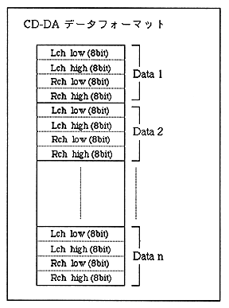

Return to previous page ｜ Return to menu ｜ Go to next page
6.3.2 CD-DA data and creation method
CD-DA data is PCM voice waveform data itself. Therefore, CD-DA data has recorded PCM waveform data as a data file. Although it is very large data, it is the simplest audio data that does not require any processing or work.
CD-DA data can be created using the waveform editor of the sound tool provided by SEGA or commercially available waveform editing tools. Any tool can be used as long as it can output 16bit stereo PCM data at 44.1KHz. There are two methods: direct digital recording of songs and sound effects, and conversion of analog audio to digital. In the case of monaural, the same data is stored in Lch and Rch.

Note 1: PCM waveform data output by various tools has a 16-bit Low / High relationship depending on the tool.
There may be the opposite. Generally, Intel CPUs use Low / High, Motorola
Since it is High / Low in the Lara system, it is in the case of the Motorola format.
Please convert to Tel format. Reverse data low / high if necessary
It is convenient to have such a tool.
Note 2: Mixer settings are required when using DSP (effects) for CD-DA.
When using DSP, prepare the necessary mixer data and use “Mixer Change (87h)”
Please issue the command. Even if there is no sequence playback, the mixer settings
* Tone data is required.
Return to previous page ｜ Return to menu ｜ Go to next page